INTEGRALHISTO1D - Integral histogram of an image.
Contents
Description
Compute the integral histograms in cartesian space of an image as defined in [Pori05].
From [OPENVIDIA]: An integral histogram is created by iteratively building a histogram of an image pixel by pixel and recording the histogram at each step. For example consider scanning pixels in raster order - left to right, top to bottom. The histogram for all pixels between the current pixel and back to the origin pixel is found and recorded as the histogram for that pixel. Then, to find the histogram for the next pixel (covering the region from that pixel to the origin), the only operation needed is to take the previous histogram, and increment the bin corresponding to the input pixel's value, yielding the histogram for that pixel. The complete set of these histograms is the integral histogram.
To find the histogram of the region between two pixels, 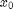
and  say, with 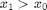
(i.e. is farther
out in scanline order), simply subtract the histogram of 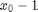
from the histogram of .
This removes the contributions to the histogram of points from 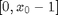
and leaves only contributions from the region 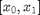
(this is the region, or scanlines, between 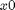
and 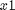).
say, with 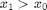
(i.e. is farther
out in scanline order), simply subtract the histogram of 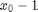
from the histogram of .
This removes the contributions to the histogram of points from 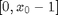
and leaves only contributions from the region 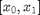
(this is the region, or scanlines, between 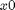
and 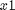).
% Generating integral histograms in scanline order is called a "string scan" % method [Pori05]. Another method of generating histograms is via "wave % propogation" where the histograms cover the rectangular region between the % current pixel and the origin. This type of integral histogram is useful % for finding the histograms of rectangular regions in of the image. This % can be implemented by, taking a row histogram of the left neighbour pixel % (ranging to the row origin) and then adding the wave propogation histogram % of the pixel above the current one, then adding the current pixel % contribution to the histogram. %
Syntax
IH = INTEGRALHISTO1D(I, nbin, bound);
Remark
IH(X,Y,:) provides the global histogram of the image when X and Y are the dimensions of the input image: both commands hist(I(:),nbin) and plot(squeeze(IH(X,Y,:))) display the same results.
References
[VJ01] P. Viola and M. Jones, "Robust Real-Time Face Detection", International Journal of Computer Vision, 57(2):137-154, 2004. http://www.springerlink.com/content/q70v4h6715v5p152/
[Pori05] F. Porikli: "Integral histogram: a fast way to extract histogram features", Proc. IEEE CVPR, pp. 829?836, 2005. http://ieeexplore.ieee.org/xpls/abs_all.jsp?arnumber=1467353
[PT06] F. Porikli and O. Tuzel: "Fast construction of covariance matrices for arbitrary size image windows", Proc. IEEE ICIP, 2006. http://ieeexplore.ieee.org/xpls/abs_all.jsp?arnumber=4106846
[OPENVIDIA] http://openvidia.sourceforge.net/index.php/IntegralHistograms
See also
Ressembles: INTEGRALHISTO2D, INTEGRALHISTOJOINT. Requires: INTEGRALIMAGE.
Function implementation
function [IH, I] = integralhisto1d(I, nbin, bound) [X,Y] = size(I(:,:,1)); if nargin==3, imax = bound(2); imin = bound(1); else imax = max(I(:)); imin = min(I(:)); if nargin<2 nbin = round(imax - imin) + 1; end end if imax==imin, error('integralhisto1d:inputerror', 'constant image - nothing to do'); elseif nbin==0 nbin = round(imax - imin) + 1; % again, default end if nbin>0 % quantize the input image I = floor((nbin-1) * (I - imin) / (imax - imin)); else nbin = abs(nbin); % a way not to quantize end % method 1: optimized, fully vectorial (non sparse) calculation and % representation of integral histograms IH = zeros(X, Y, nbin); ind = (1:X*Y)'; IH(ind + X*Y*I(:)) = 1; % IH = cumsum(cumsum(IH,2),1); IH = integralimage(IH); if false IH = sparse(reshape(IH, [X*Y, nbin])); %#ok end % % method 2: non vectorial version % subind = nbin * (0:Y-1); % % create the output histograms % IH = zeros( X+1, Y, nbin ); % % propagate the histogram along x-dimension % for x=1:X % % method 2.a) % H = zeros(nbin,Y); % hh = I(x,:) + subind + 1; % H(hh) = H(hh) + 1; % % cumulate the histogram along y-dimension % H = cumsum(H,2)'; % % propagate % IH(x+1,:,:) = H + squeeze(IH(x,:,:)); % % % method 2.b) % % H = zeros(nbin,1); % % for y=1:Y % % H(I(x,y) + 1) = H(I(x,y) + 1) + 1; % % IH(x+1,y,:) = H + squeeze(IH(x,y,:)); % % end % end % % get rid of the dummy row % IH = IH(2:end,:,:); end % end of integralhisto1d